| Version | Date | Revision | Editor |
|---|---|---|---|
| V1.0.0 | 2022/10/01 | Manual created | Su Jinglan |
| V1.0.1 | 2023/08/05 | Revision | Su Jinglan |
The continuously operating reference station and high-precision satellite positioning and navigation service system (CORS) is a large-scale integrated positioning and navigation service network built on modern GNSS technology, computer network technology, networked real-time positioning service technology and modern mobile communication technology. The defining feature of CORS is that it brings the concept of networking into geodesy and surveying applications — it not only transforms the surveying and mapping industry, but also introduces a new service model for position and time information in modern society. The system meets a wide range of societal needs in modern information-based management: urban planning, land surveying and mapping, cadastral management, urban and rural construction, environmental monitoring, disaster prevention and mitigation, vessel and vehicle navigation, traffic monitoring, and more. Its main functions are:
The system comprises the following modules:
1. Reference station data acquisition and decoding module
Based on an event-driven asynchronous I/O model, the module connects to physical or virtual stations with higher data processing efficiency and stability, and supports data connection and processing for large-scale physical or virtual stations. It uses the NTRIP and RTCM protocols to connect to continuously operating satellite reference stations and to acquire raw observation data of the BeiDou, GPS, GLONASS, Galileo and QZSS satellite systems, as well as precise coordinates and other information of the reference stations.
The module supports the NTRIP and RTCM protocols. RTCM data is decoded through a queue, so as to obtain the satellite pseudorange and carrier phase observations, Doppler observations, carrier-to-noise ratios and ephemeris data broadcast by the reference stations, as shown in Figure 1.2.
2. Multi-constellation satellite orbit and clock error computation module
Using the ephemeris data of each reference station, the system updates the satellite ephemeris database. It computes the orbits and clock errors of BeiDou, GPS, Galileo and GLONASS satellites from the real-time broadcast navigation ephemeris, and detects and excludes anomalous satellites based on the RAIM integrity monitoring algorithm, as shown in Figure 1.4.
3. Multi-system reference time system conversion module
Multi-system reference time system conversion covers the conversion between the BeiDou, GPS, Galileo and GLONASS reference time systems.
4. Reference station networking module
The reference station triangular network is built based on Delaunay triangulation, as shown in Figure 1.5.
5. Reference station baseline solving module
The module performs RTK solving with the satellite pseudorange and carrier phase observations of the reference stations (supporting BeiDou, GPS, Galileo, GLONASS, QZSS and more), and obtains the inter-station ambiguities and errors (ionospheric, tropospheric and other unmodelled residual errors).
6. Network RTK solving module
A master reference station is selected, and subnetworks are constructed over the reference station triangular network for network RTK solving, as shown in Figure 1.6.
7. Virtual reference station pseudorange and carrier phase observation generation module
Pseudorange and carrier phase observations are generated according to the position of the virtual reference station.
8. Virtual reference station pseudorange and carrier phase observation broadcasting module
Terminal users connect to the continuously operating reference station and satellite positioning and navigation system through the NTRIP protocol. After successful authentication, the system broadcasts the virtual reference station pseudorange and carrier phase observations to the users via the NTRIP and RTCM protocols, as shown in Figure 1.7.
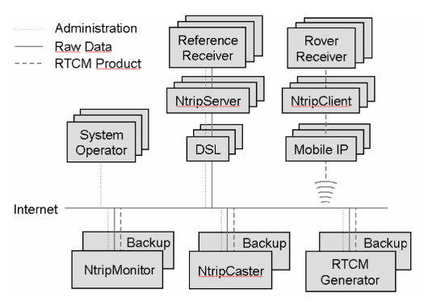
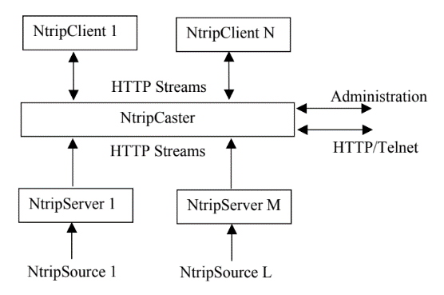
Figure 1.7 NTRIP protocol
9. Virtual console module
The module connects to the continuously operating reference station and satellite positioning and navigation system in remote or local mode; commands can be issued to the running system, and the current operating status of the system can be queried through the virtual console, as shown in Figure 1.8.
Before using the continuously operating reference station and high-precision satellite positioning and navigation service system, the configuration files must be prepared.
| Parameter | Description |
|---|---|
| ntrip-sources-file | Path of the reference station input configuration file |
| trace-file | Path of the system log file |
| baselines-file | Path of the baseline list configuration file |
| base-stations-info-file | Path of the reference station information configuration file |
| virtual-stations-file | Path of the virtual reference station configuration file |
| rtk-conf-file | Path of the baseline RTK solving configuration file |
| agent-user-file | Path of the user configuration file |
| monitor-port | Monitoring port of the real-time integrity monitoring system |
Format: station name, IP, port, user name, password, mount point, reference station latitude, reference station longitude, reference station height#
Example:
A005,127.0.0.1,8002,test ,pwd ,A005,39.67042106,115.92179510,73.42850#
A006,127.0.0.1,8002,test ,pwd ,A006,39.68042106,115.92379510,73.43850#
A007,127.0.0.1,8002,test ,pwd ,A007,39.64842106,115.92879510,73.45850#
A008,127.0.0.1,8002,test ,pwd ,A008,39.54042106,115.12079510,73.46850#Format: virtual reference station name, ECEF-X, ECEF-Y, ECEF-Z#
Example:
VRS001,-2149724.236,4410605.355,4061567.167#| Parameter | Description |
|---|---|
| pos1-posmode | Solving mode — the fused positioning solving mode. Options:
single: GNSS single-point solving dgps: GNSS differential solving static: static mode ppp-kine: GNSS precise kinematic single-point solving ppp-static: GNSS precise static single-point solving |
| pos1-frequency | Solving frequency |
| pos1-soltype | Solution type |
| pos1-elmask | Maximum satellite elevation angle |
| pos1-tidecorr | Tide correction: off, on |
| pos1-ionoopt | Ionospheric correction parameters:
off: ionospheric correction off brdc: broadcast ionospheric correction model sbas: SBAS ionospheric correction model dual-freq: dual-frequency ionospheric correction model ionex-tec: IONEX ionospheric correction model qzs-brdc: QZS broadcast ionospheric correction model qzs-lex: QZS-LEX ionospheric correction model stec: STEC ionospheric correction model |
| pos1-tropopt | Tropospheric correction parameters:
off: tropospheric correction off saas: SAAS tropospheric correction model sbas: SBAS tropospheric correction model est-ztd: estimate tropospheric zenith total delay est-ztdgrad: estimate tropospheric zenith total delay and gradient parameters ztd: tropospheric zenith total delay correction model |
| pos1-sateph | Ephemeris parameters:
brdc: broadcast ephemeris precise: precise ephemeris |
| pos1-navsys | Satellite systems used in solving:
1:gps+2:sbas+4:glo+8:gal+16:qzs+32:comp |
| pos2-armode | Ambiguity fixing mode:
0:off, 1:continuous, 2:instantaneous, 3:fix-and-hold, 4:pppar, 5:pppar-ils, 6:wlnl, 7:tcar, 8:wlnlc, 9:tcarc |
| pos2-arthres | Ambiguity fixing threshold (ratio) |
| pos2-arlockcnt | AR lock count |
| pos2-arelmask | AR maximum elevation angle |
| pos2-arminfix | AR minimum fix count |
| pos2-elmaskhold | AR hold maximum elevation angle |
| pos2-slipthres | Cycle-slip detection threshold |
| stats-eratio, stats-eratio2, stats-errphase, stats-errphaseel, stats-errphasebl, stats-errdoppler, stats-stdbias, stats-stdiono, stats-stdtrop, stats-prnaccelh, stats-prnaccelv, stats-prnbias, stats-prniono, stats-prntrop, stats-prnpos, stats-clkstab | Random error model parameters |
| pos2-maxage | Age of RTK observation data |
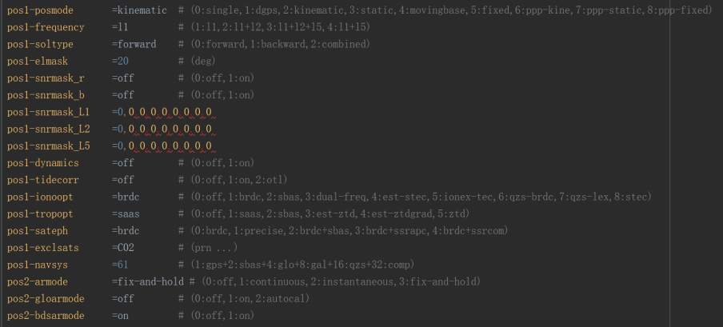
Format: user name, password#
Example:
test1,password#
test2,password#Format: reference station name, specific address, city, district, ECEF-X, ECEF-Y, ECEF-Z, ITRF, flag
Example:
S009,XX Street Qingpu District Shanghai,Shanghai,Qingpu,31.12333298,121.07179362,55.9978,2014,0
S010,XX Street Jinshan District Shanghai,Shanghai,Jinshan,30.91804368,121.16882480,90.5689,2014,0Program interface:
cors-engine [-o file] [-t level]Parameters:
-o — path of the system configuration file-t — log output level (1: error, 2: warning, 3: info)Example:
cors-engine.exe -o .\cors\conf\cors.conf -t 3The virtual console connects to the continuously operating reference station and high-precision satellite positioning and navigation system in remote or local mode; commands can be issued to the running system, and the current operating status of the system can be queried through the virtual console.
start;cors server already start is returned and the system starts running.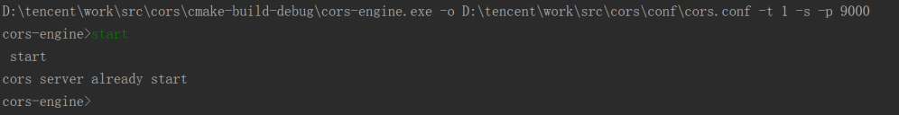
addsource;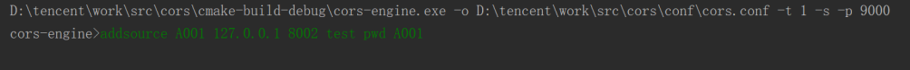
delsource;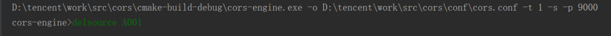
loadopt;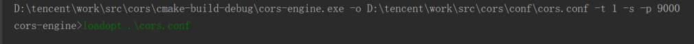
navidata;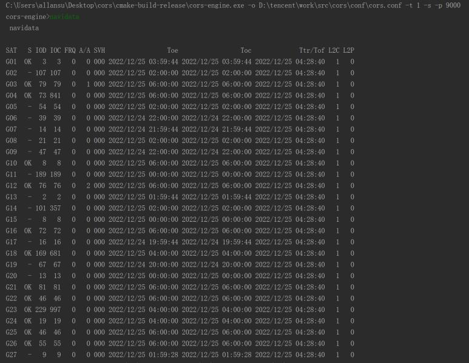
observ name -nf, where name is the reference station name and nf is the number of frequencies;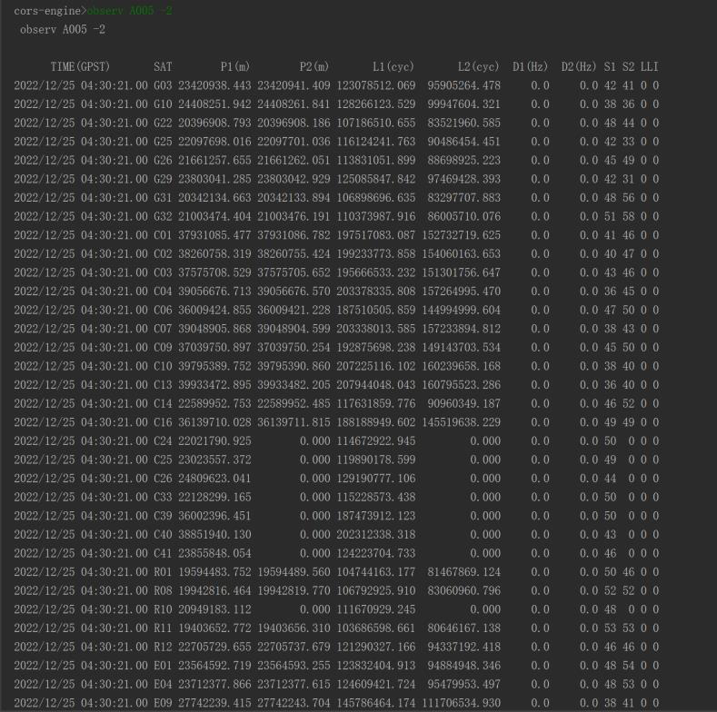
satellite name -nf, where name is the reference station name and nf is the number of frequencies;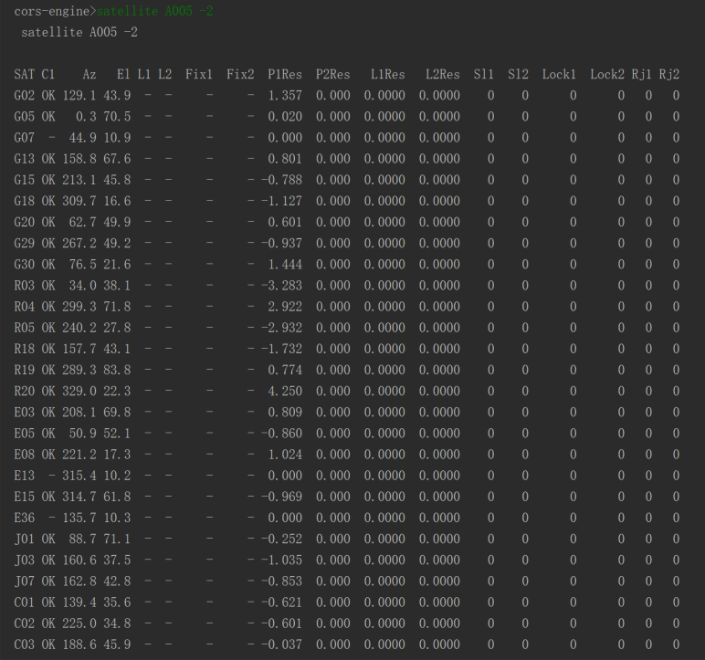
sourceinfo name, where name is the reference station name; when name is all, the status information of all reference stations is displayed;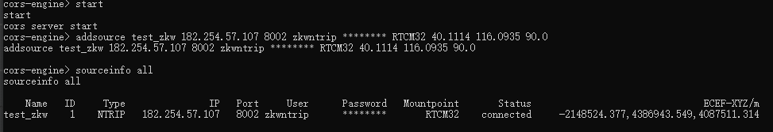
addvsta name X Y Z, where name is the virtual reference station name and X, Y, Z are the coordinates;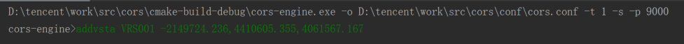
delvsta name, where name is the virtual reference station name;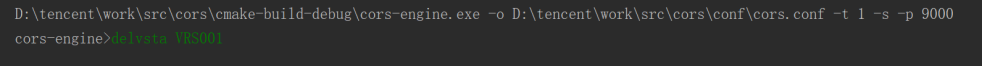
showdtrigs;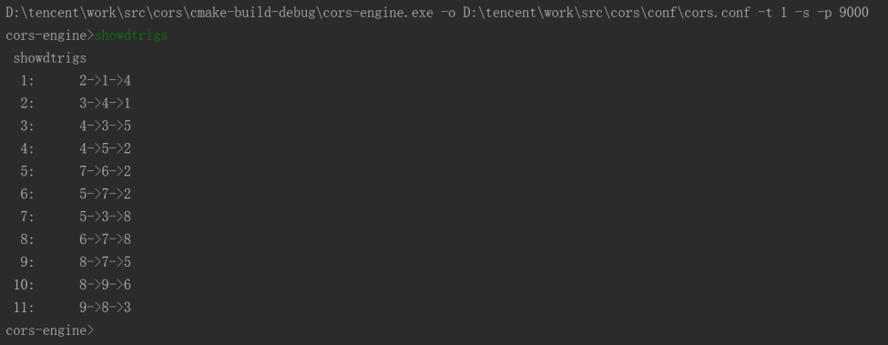
showbls;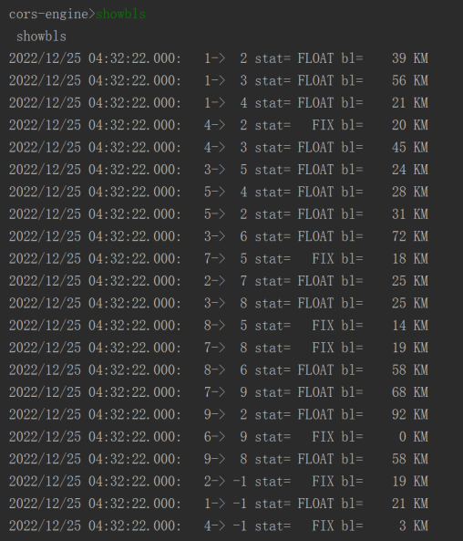
showsubnet;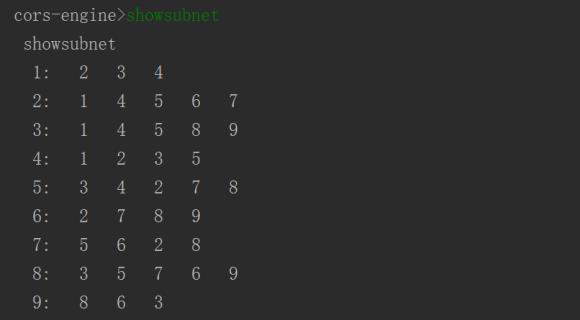
showvsta;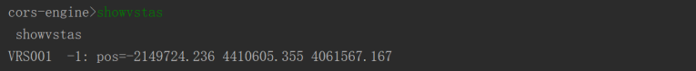
adduser name password;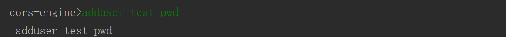
deluser name;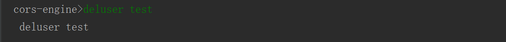
showusers;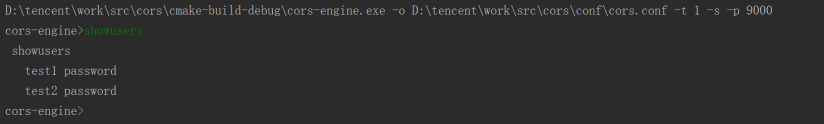
moniinfo;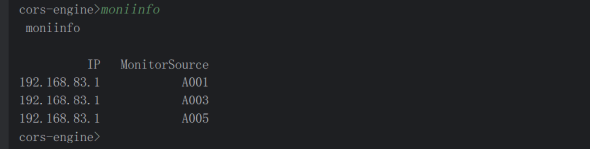
agentinfo;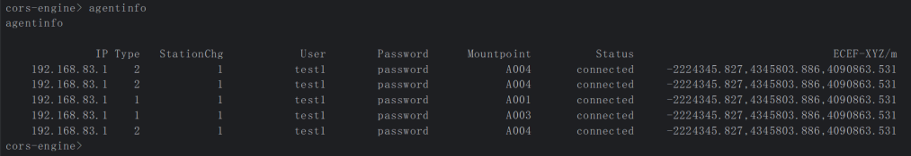
drawdtrignet dtrignet.png;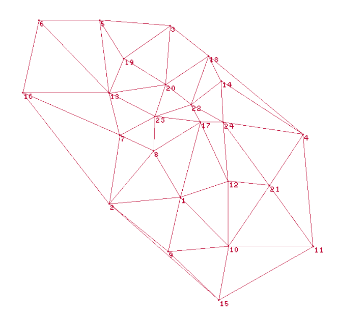
drawvsta VRS001 VRS001.png;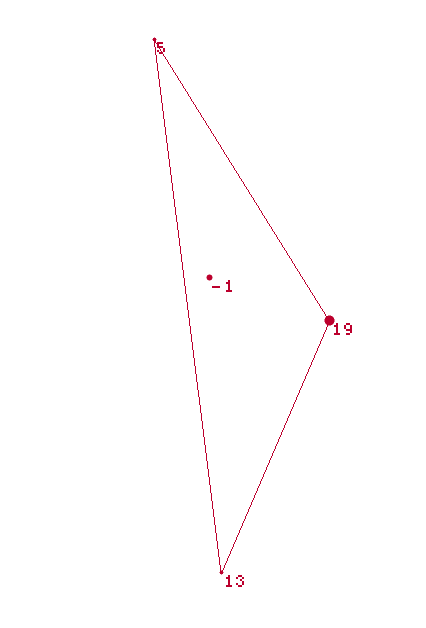
stop — stop cors server is returned;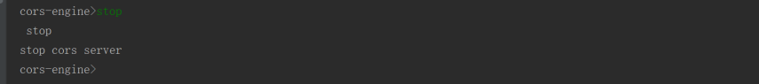
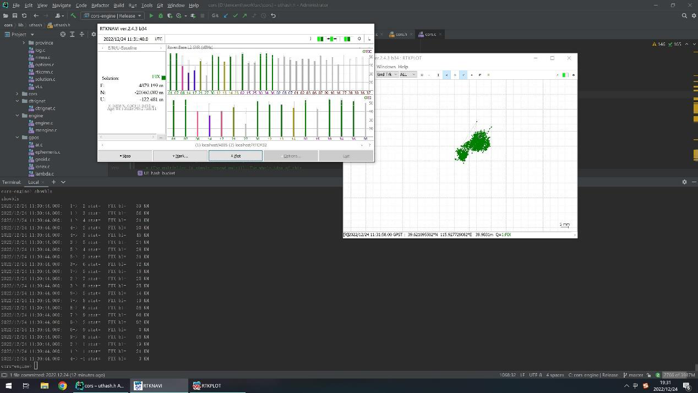
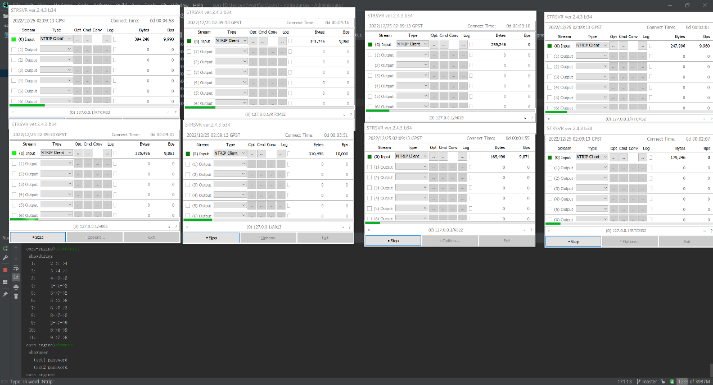
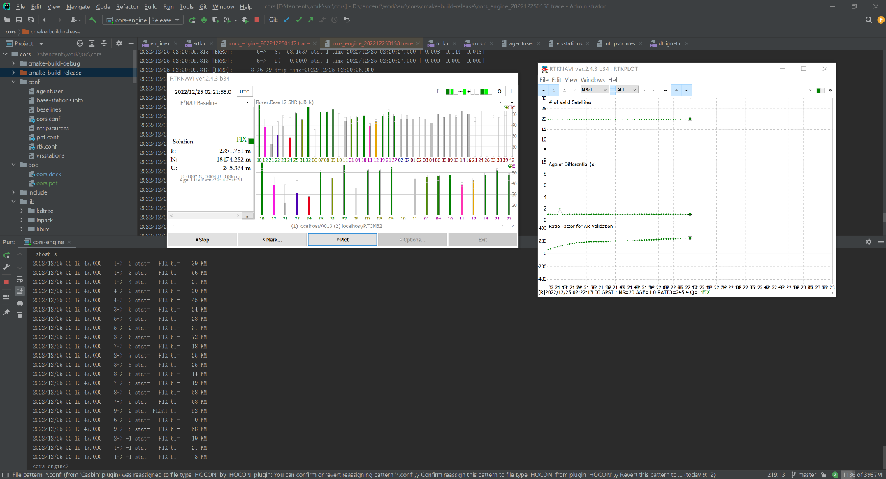
Figure 2.24 Runtime views